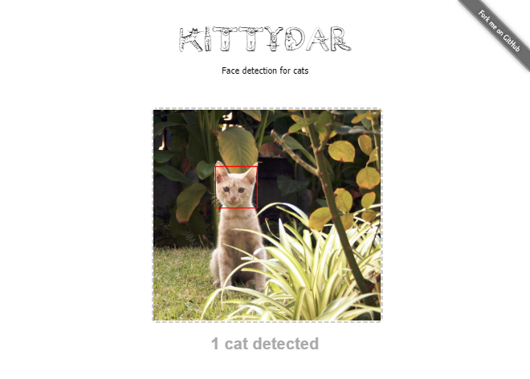
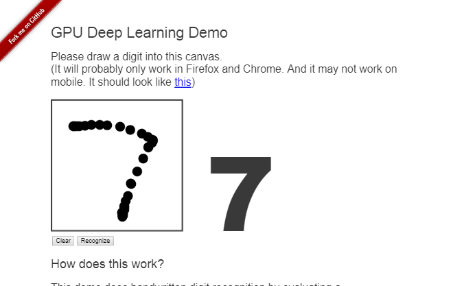
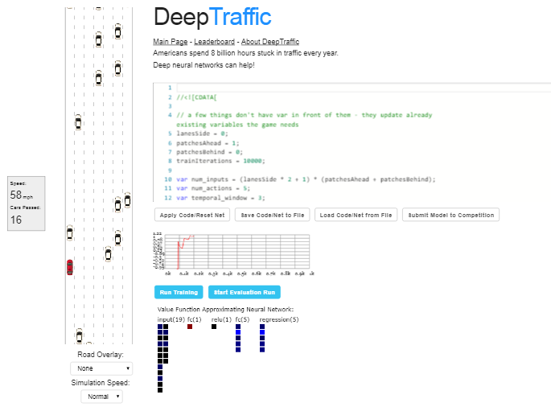
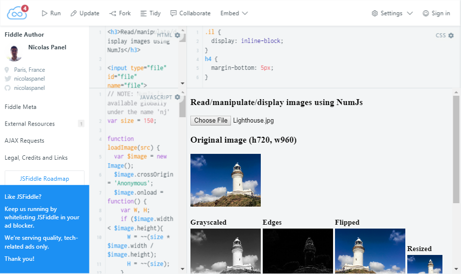
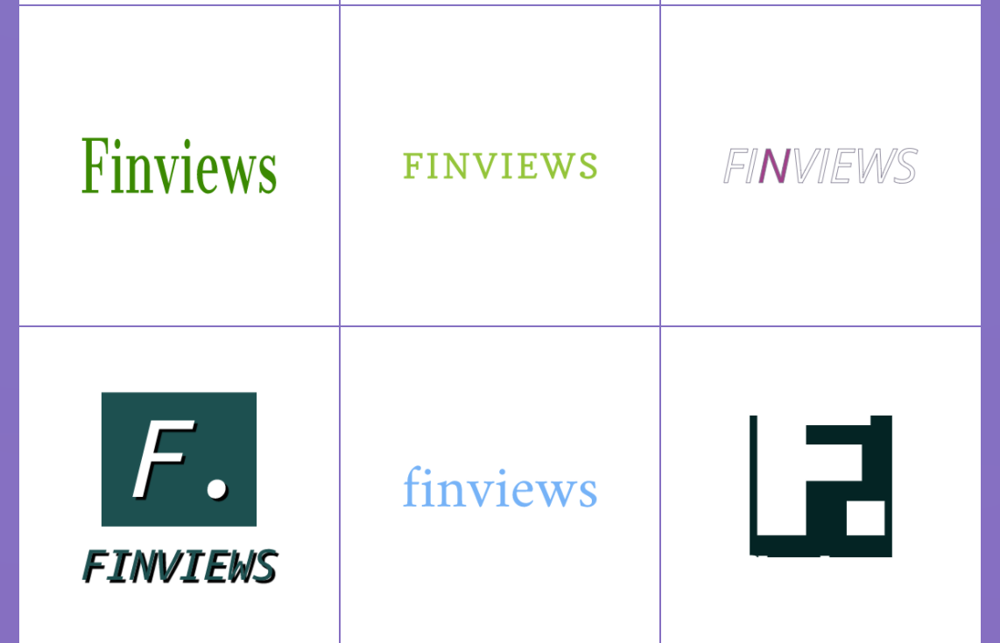
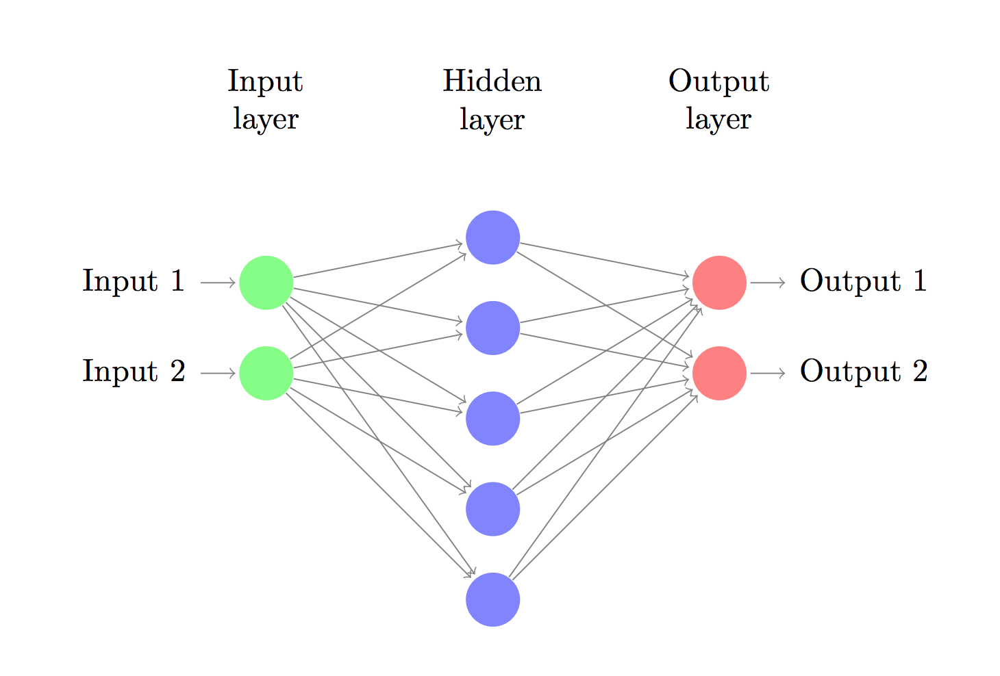
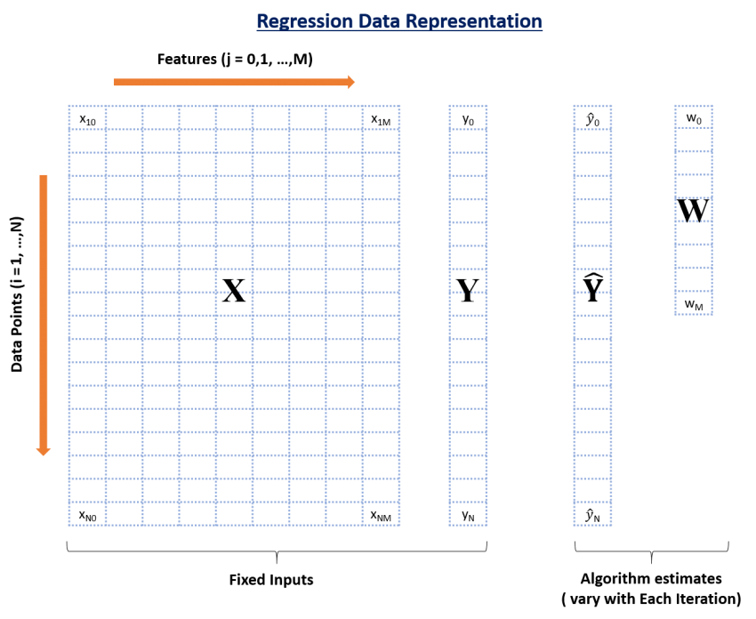
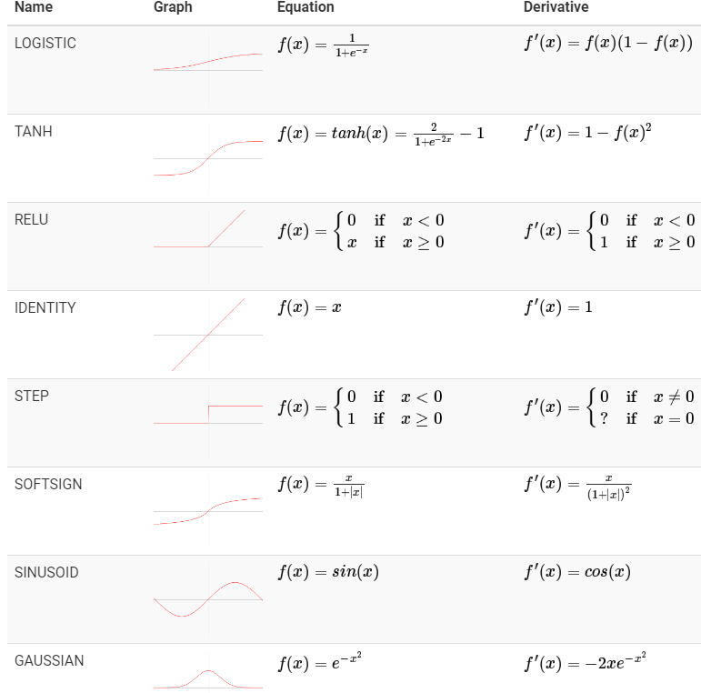
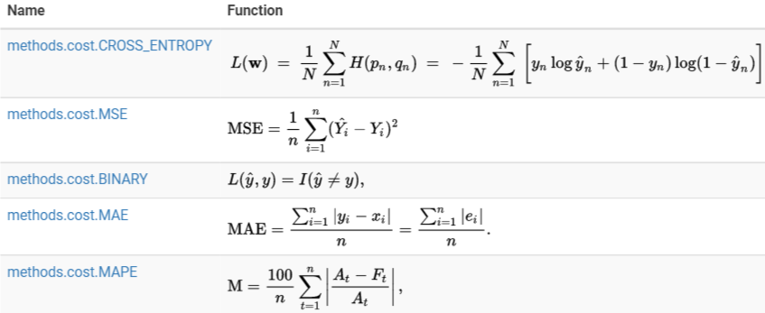

Cat recognition
Digit recognition
Self-driving car simulations
Source: Deep Traffic MIT - 6.S094: Deep Learning for Self-driving cars
Image manipulations
Source: NumJs Demo
Automatic logo generator
Source: MarkMaker
Natural Language processing
AI for Robots
Source: Bot brain
Neural Network
Different way to look at it
Perceptron

Forward vs Backpropagation


Source: Rohan & Lenny #1: Neural Networks & The Backpropagation, Explained
Activation functions
Source: Neataptic
Cost functions
Source: Neataptic